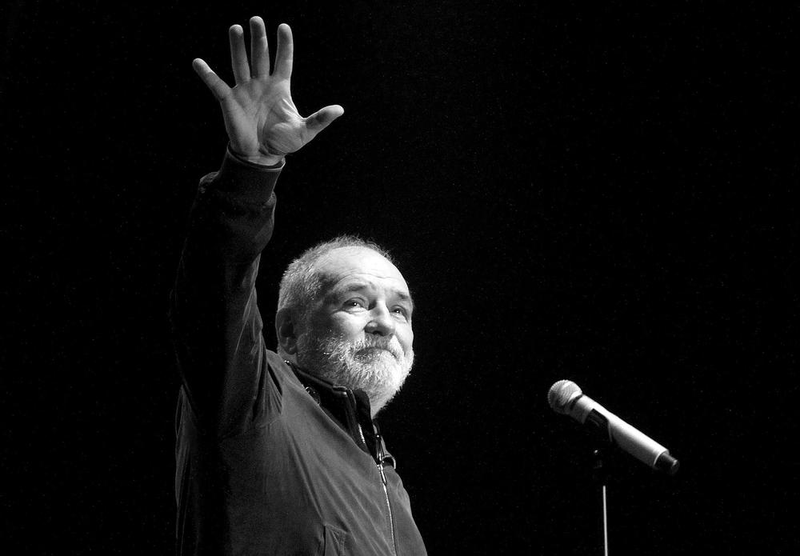
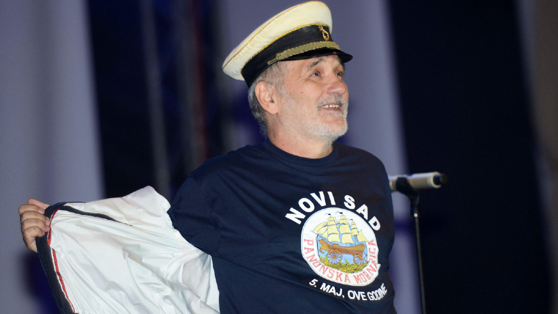
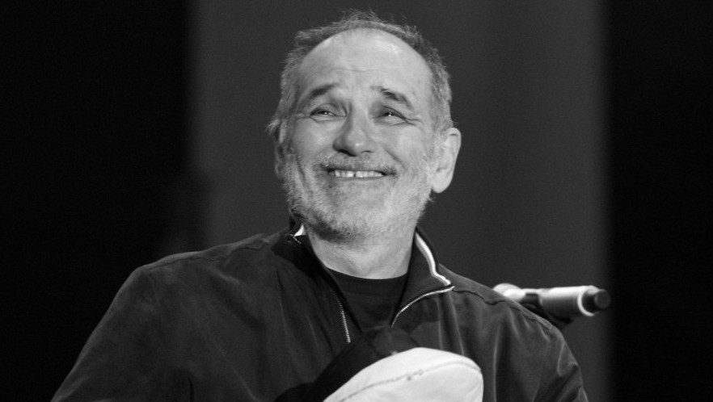

Đorđe Balašević je bio srpski pevač, tekstopisac, pesnik, glumac i reditelj. Rođen je 11. maja 1953. godine u Novom Sadu. Preminuo je 19. februara 2021. godine u rodnom gradu.
Njegovi roditelji su se zvali Jovan Balašević i Veronika Elvira Matilda Dolenc, a imao je i pet godina stariju sestru Jasnu koja je preminula. Uprkos svim uspesima koje je postigao, otac i majka su se protivili njegovoj odluci da bude muzičar i smatrali su da bi trebao da se bavi geografijom za šta se i školovao. Nisu prisustvovali nijednom njegovom koncertu, a uvek im je čuvao dva prazna mesta. Prezime Balašević je nastalo tako što mu je svaka generacija dodavala po neko slovo. Deda Đorđe, po kome je pevač dobio ime, se prezivao Balaš i bio je pravoslavac koji se plašio da ih ne pomađare. Zato je otišao u opštinu i platio da se prezimenu doda nastavak -ić. Odrastao je u Novom Sadu, u kući u Ulici Jovana Cvijića koja se pominje u njegovoj pesmi Neki novi klinci. Tu je do smrti živeo sa suprugom Oliverom sa kojom je imao troje dece: Jovanu, Jelenu i Aleksu. Uz sestru je rano naučio da čita i bio je čudo od deteta. U osnovnoj školi je počeo da piše pesme i sanjao je da postane fudbaler. Bio je mirno dete i odličan đak što se u gimnaziji promenilo. Otac Jovan je dobio posao u inostranstvu, a majka je bila popustljiva zbog čega se iz škole ispisao u trećoj godini. Iz srpskog i društvenih nauka je ređao petice, dok iz matematike, fizike i hemije nije mogao da dobije prelaznu ocenu. Maturirao je kao vanredni učenik i upisao je studije geografije na PMF-u. Indeks mu je bio pun desetki, ali nije diplomirao, jer je počeo da se bavi muzikom.
Sa 18 godina je prvi put svirao gitaru i pisao je tekstove koje je verovao da neće nigde objaviti. Prvu pesmu je posvetio muvi kad je bio prehlađen, jer ga je nervirala njena pojava. Nakon toga je prepevao mnoge strane hitove za emisiju Muzički klub. Iako nije pohađao muzičku školu, bio je veoma muzikalan i imao je inspiraciju da piše tekstove.
Balašević je 1977. godine sa drugovima iz gimnazije osnovao akustičarsku grupu Žetva sa kojom je snimio pesmu U razdeljak te ljubim u izdanju RTV Ljubljana. Iako je nije voleo, nakon njenog izvođenja na radiju, otvorila su mu se mnoga vrata. Singl je prodat u 180 000 kopija što je bio prvi veliki pevačev uspeh. Sa Vericom Todorović je 1978. godine oformio novu grupu Rani mraz kojoj je dao ime iz inata vodeći se sibirskom poslovicom Ako se nadaš dobroj žetvi, čuvaj se ranog mraza. Pošto u grupi niko nije znao dobro da svira, mislili su da će biti reč o sezonskoj zabavi, ali nakon nastupa na festivalu u Opatiji sa pesmom Prva ljubav, priča je postala ozbiljna.
Usledili su festival u Zagrebu gde su se predstavili sa pesmom Marina i festival u Subotici gde su izveli numeru Računajte na nas koja se smatrala himnom generacije. Grupa je imala veliki broj članova, a neki od njih su bili Bora Đorđević i Bilja Krstić. Tokom ove godine su objavili nekoliko singlova koje je publika odlično prihvatila: Kristifore, crni sine, Ljubio sam snašu na salašu i Oprosti mi, Katrin. Đorđe je 1979. godine sa Biljom Krstić snimio album Mojoj majci umesto maturske slike u izlogu“ u izdanju PGP RTB-a.
Grupa je rasprodala osam koncerata u Domu Sindikata čime su potvrdili svoju popularnost. Osim toga, Đorđe se pojavio u serijama „Poletarac“ i „Kost od mamuta“. Na njihovim koncertima je gostovao i pesnik Mika Antić. Napisao je pesmu „Zbog tebe“ i poklonio je Zdravku Čoliću. Đorđe je 1980. godine služio vojsku u Zagrebu i Požarevcu gde je snimio humorističku seriju „Vojnici“. Bio je kompozitor i tumačio je ulogu Stojšin-Lale. U emisiji „Bilo pa prošlo“ je bio muzičar. Sa grupom Rani mraz je snimio poslednji album „Odlazi cirkus“, takođe za PGP RTB, na kome se izdvojio veliki broj hitova.
Solo karijeru je i zvanično započeo 1982. godine na festivalu u Opatiji gde je promovisao numeru Pesma o jednom petlu. Nastavio je saradnju sa PGP RTB-om i na njegovom prvom samostalnom albumu Pub“ su se našle numere Ilona, Ratnik paorskog srca, Za sve je kriv Toma Sojer, Za treću smenu, Lepa protina kći, Pesma o jednom petlu, Boža zvani Pub, Predlog i Na pola puta.Tumačio je ulogu berberina Šace u seriji „Pop Ćira i pop Spira“, a devojku koju je oženio, Jucu, glumila je njegova supruga Olivera Balašević.
Drugi album pod nazivom Celovečernji the Kid je objavio 1983. godine. Krajem iste godine je napravio prvi koncert u Sava Centru što će postati njegova tradicija dugi niz godina.
Balašević je 1985. godine objavio treći solo album „003“. Naredne godine je započeo najplodniji period Balaševićevog stvaralaštva. Napravio je grupu koja će mu u budućnosti biti studijska i koncertna potpora. U izdanju „Jugotona“ je izašao album „Bezdan“ na kome su svih devet numera postale hitovi.
U izdanju „Jugotona“ je izašao album „Bezdan“ na kome su svih devet numera postale hitovi. On je 1987. godine objavio album „U tvojim molitvama“ na kome su se našli snimci sa uspešnih koncerata u Novom Sadu, Beogradu, Zagrebu i Sarajevu.
Tokom 1989. godine je završio snimanje albuma „Tri posleratna druga“ sa pesmama Sugar rap, Još jedna pesma o maloj garavoj, Devojka sa čardaš nogama, Ćaletova pesma, D-moll, Kad odem, Saputnik, Remorker i O Bože. Počeo je da piše istoimeni roman koji je objavio dve godine kasnije. Snimio je emisiju „Specijalna redakcija“ u kojoj je bio Sava Ladački. Zatim su se albumi, koncerti i pesme samo dalje ređali...
Za svoj rad je dobio brojne nagrade, a neke od njih su: Nagrada punoletstva, Oktobarska nagrada Novog Sada, Estradna nagrada Jugoslavije, nagrada za literarni doprinos u području estrade na Domanovićevim danima satire, nagrada Todor Manojlović za poseban umetnički senzibilitet i mnoge druge.